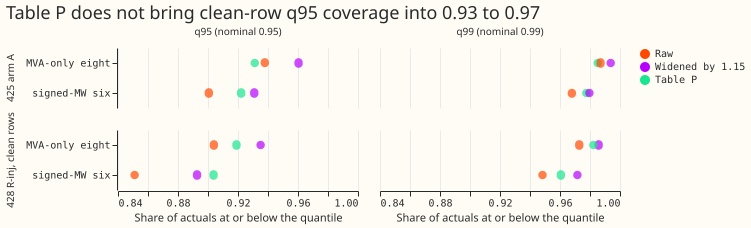
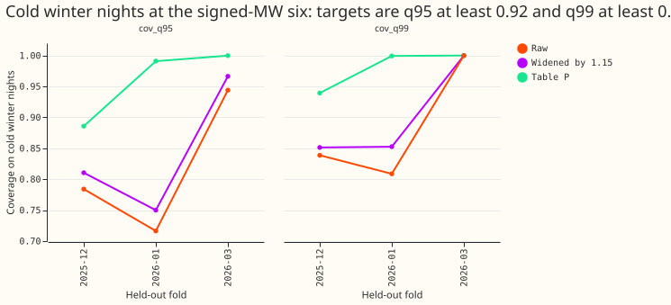
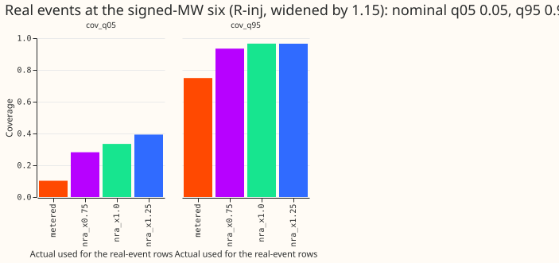

Does a stratified recalibration table, fitted on stored forecasts, keep the demand bands honest when inputs are untrusted and fix the tail coverage on clean rows?
Take-home: table P lifts stale forecasts to within 0.05 to 0.07 of the 0.93 floor and raises demand tail coverage, but clean-row q95 stays at 0.904 and 0.919, so the 1.15 widening is not replaced. Injected-harm rows sit within 0.01 of clean rows after table P. The likely cause of the remaining shortfall is month-to-month drift in the error scale, which this stage did not test. This stage fits no forecast model.



Setup
- Arms. Stored forecasts of experiments 428 (arms R-inj, R, E1, E2, E3, E3-surp, L0, Bmix), 425 (arms R and A), 422, 410, 429 (wind), and 430 (solar). Nothing is refitted.
- Table P. For each metering group, lead band (0 to 12 h, 12 to 36 h, 36 to 72 h, days 4 to 5, days 6 to 10), and input-condition class, one factor per tail quantile multiplies the quantile's distance from the median. It is fitted on earlier months and scored on the next month, with at least 200 fitting rows per cell.
- Groups. Signed-MW six (D5, D9, D10, D11, D14, D16), MVA-only eight (D2, D3, D4, D8, D12, D19, D21, D22), and D15 and D18 (reported, never judged).
- Classes (experiment 428). Clean, injected-harm, surprise 2 to 4, surprise above 4, lag missing, and real event.
- NRA-corrected actuals. The metered actual minus the event's step, using the measured deviation for 34 of 184 events and the labelled depth for the other 150. No event was dropped. The median ratio of measured to labelled depth is 0.96. The 0.75 and 1.25 variants scale the used step.
- Months scored. Table P needs earlier months to fit, so the 428 tables score three months (2026-01, 2026-03, and 2026-06) of the five folds.
- Compute. No fits, one to four CPU cores, nice 19.
Results
Table P does not pass the clean-row rule on experiment 428 arm R-inj (three scored months, clean rows).
| Group | q95 raw | q95 widened 1.15 | q95 table P | q99 raw | q99 widened 1.15 | q99 table P |
|---|---|---|---|---|---|---|
| Signed-MW six | 0.851 | 0.893 | 0.904 | 0.948 | 0.972 | 0.961 |
| MVA-only eight | 0.904 | 0.935 | 0.919 | 0.973 | 0.986 | 0.982 |
- The rule asks for q95 in 0.93 to 0.97 and q99 in 0.98 to 0.995. Only the MVA-only q99 passes.
- The 1.15 widening beats table P on q95 at the eight MVA-only series (0.935 against 0.919). The pinball loss at q95 and q99 differs by under 0.001 of capacity, and is slightly worse for table P at the six signed-MW series (q95 0.0088 against 0.0082, q99 0.0028 against 0.0023).
- Coverage swings by month. Table P q95 at the six signed-MW series is 0.781, 0.962, and 0.932 in the three scored months (raw 0.796, 0.879, 0.862; widened 0.842, 0.922, 0.899), so table P is worse than both alternatives in the first month and better in the other two.
- Clean-row q05 and q01 lie inside the rule (six signed-MW series 0.044 and 0.008; eight MVA-only series 0.038 and 0.009). CRPS is not computed in this stage.
- Injected-harm rows sit within 0.01 of clean rows after table P (q95 0.911 against 0.904 at the six signed-MW series, 0.923 against 0.919 at the eight MVA-only series), so the injected inputs do not cause the shortfall. Three classes at the six signed-MW series miss the gap rule: real events (q95 0.742), lag missing (q95 0.854, 403 rows), and surprise 2 to 4 (q99 0.930 against 0.961 on clean rows).
- Real events are under-covered against metered actuals. At the six, q95 is 0.742 and q05 is 0.158. Against NRA-corrected actuals, q95 is 0.961 and q05 is 0.377, because the forecast follows the event. The 0.75 and 1.25 scalings change q95 by under 0.05 (0.917 to 0.964).
- Stale arms improve most. On the six signed-MW and eight MVA-only series, q95 coverage rises from 0.503 to 0.882 (experiment 410 DROP) and from 0.691 to 0.950 (experiment 422 DROP). The fresh arm of experiment 410 rises from 0.875 to 0.927 (all three groups pooled).
- Cold winter nights remain under-covered at the six (experiment 425 arm A, 34 days, 15,449 rows, minimum detectable effect 0.066 for q95): q95 0.752 and q99 0.827 raw, 0.782 and 0.856 widened by 1.15, against targets of 0.92 and 0.975. A cold-night class of table P, fitted leave-one-fold-out, reaches 0.943 and 0.972 on 13,734 rows (the stored table has fewer rows than the 15,449 above, which are the raw slice), missing the q99 target by 0.003. Its q95 by fold is 0.886, 0.991, and 0.999, and the last fold holds only 179 rows.
- Seed pooling does not widen the bands. The band widths of the three seeds and of their pooled average differ by under 1% on clean rows (R-inj, eight MVA-only series: 0.250, 0.252, 0.251, pooled 0.251). Prediction P5 fails at the eight MVA-only series: pooled injected-harm bands are 17% wider than clean bands (0.294 against 0.251), against a predicted under 5%. At the six signed-MW series they are 1% wider.
- Wind (experiment 429, clipped to 0 to 1 of capacity). Across the 11 arms, q99 coverage is 0.977 to 0.981 raw and 0.983 to 0.987 after table P. P4 predicted a rise from about 0.972 to 0.98 or above. Raw coverage is already 0.98 or above in 5 of the 11 arms.
- Solar (experiment 430): rescaling lowers q99 coverage once the quantiles are clipped to 0 to 1. Across the 11 arms, q99 coverage is 0.968 to 0.988 raw, 0.963 to 0.967 after table P, and about 0.970 after the 1.15 widening. Pinball at q99 is also worse for table P (0.0040 against 0.0032 raw). In 2.0% of rows the normalised actual exceeds 1 (maximum 1.14), and the stored raw q99 exceeds 1 in 16% of rows, so a clip at 1 cannot cover those actuals. Without the clip the same tables read 0.984 to 0.992 (table P) and 0.995 (widening). The cause of actuals above 1 is unmeasured, and the right upper bound for solar is a decision for the maintainer.
Checks
- Clipping. The widening and table P rescale the quantiles. Wind and solar quantiles are clipped to 0 to 1 of capacity after rescaling. Demand quantiles in MW are not clipped, because no bound applies to every series. The 422 and 410 tables are also unclipped.
- Mean-forecast contrast. The solar arm
a2_mean_only(experiment 430) is the only mean-forecast arm scored here, and the page does not contrast it with the quantile arms. - Audit triggers. The stage fits no model and changes no stored row.
Caveats
- The shortfalls are lower bounds. NGED's logs miss some events, so rows labelled clean may hold unlogged events.
- The true rate of genuine level changes is unmeasured. The label table's median event lasts 48.2 hours and 10.7% of its rows last longer than 7 days, and the injected-rate sweep belongs to Brief B.
- Table P under-corrects across months. It is fitted on earlier months only, so a drift in the error scale appears as a shortfall.
- Wind scoring uses a median-band stand-in for the wind-speed-band class.
- Cold nights use leave-one-fold-out fitting and day-resampling intervals, a departure from the earlier-folds-only rule, because three folds are too few for month blocks.
- Event-cluster upper bounds for classes with fewer than 20 real events, and the real-event scores without the largest event, are not computed.
Steps as planned
- Step 1: build NRA-corrected actuals for the scored months of experiment 428's four folds and 2025-12. The step removed from each event is the measured deviation (experiment 402's measurement and filters) where one exists, and the labelled depth otherwise. The 0.75 and 1.25 variants scale the used step, so they are centred on the measured deviation. The page reports how many events have a measured deviation (34 of 184) and the count of dropped events (0).
- Step 2: tail-coverage diagnostics on stored forecasts of experiments 425, 429, and 430.
- Step 3: fit table P once the cross-fit table of experiment 404 is frozen (commit 63d3799f) and experiment 428 seeds 1 and 2 are scored; apply it to the stored forecasts of 410, 422, 425, 428, 429, and 430.
- Step 4: pool the three seeds of experiment 428 and report the band-width ratio and coverage on harm rows against clean rows.
- Compute: no fits, one to four CPU cores,
nice 19, under 8 GB of memory per process.
Conditions from the load-shift review (2026-10-31)
- Event durations are checked. The label table has a median duration of 48.2 hours, and 10.7% of its 112 rows last longer than 7 days (0.125 of the 184 event rows), which matches the figures the review quoted.
- The true rate of genuine level changes is unmeasured. The write-up states this, and the injected-rate sweep (2% and 5% of training rows) belongs to Brief B.
- Clean-row and harm-row results are lower bounds. NGED's logs miss some events, so rows labelled clean may hold unlogged events, and every coverage figure on the page is reported as a lower bound on the shortfall.
Cold winter night slice (2026-10-31)
- Slice. Experiment 441's
cold_winter_nightmask, read from its stored mask table, is a named slice and an extra input condition of the table. Targets on the slice, per metering group: q95 coverage at least 0.92 and q99 coverage at least 0.975. The page states the slice's rows, days, and minimum detectable effect first, and reports it per fold. - Scored folds. The mask covers four folds (2025-10, 2025-12, 2026-01, 2026-03), and only the
last three hold cold nights, so the slice is fitted leave-one-fold-out on experiment 425's arms
RandA. That is a departure from the earlier-folds-only rule of the main table. - Interval. Three folds are too few for a month-block interval, so intervals resample whole local days.